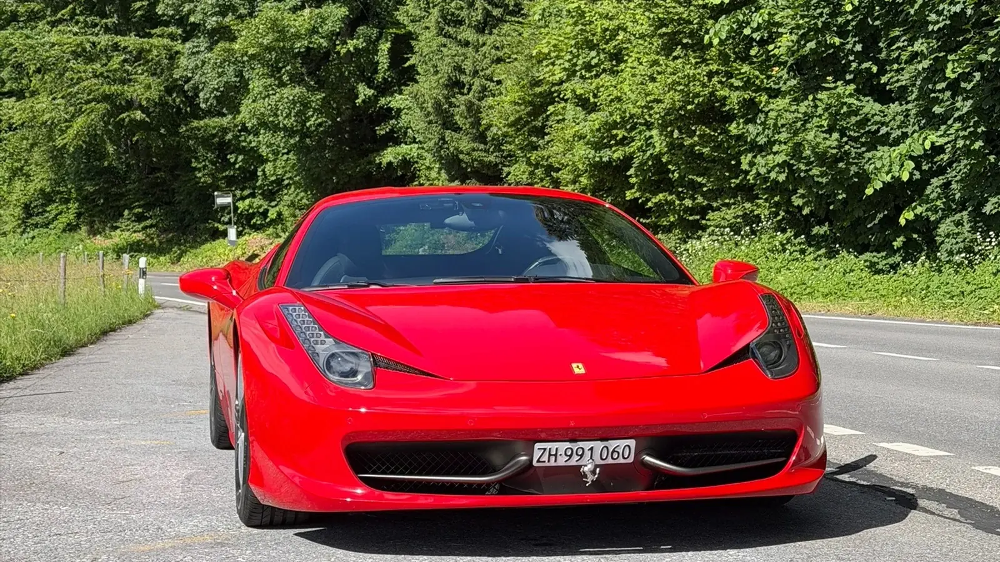
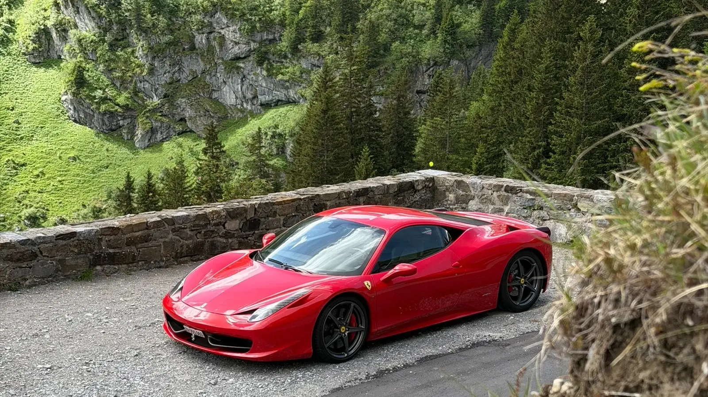
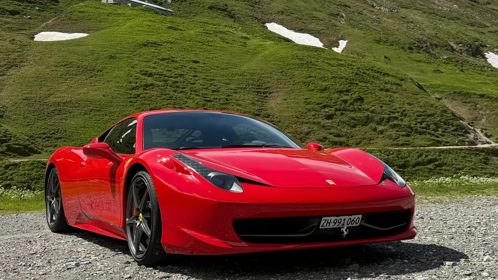

The plan was clear from the beginning: start early, leave the everyday car safely parked in Nänikon, and spend the morning driving the Ferrari 458 Italia on a route that genuinely suits it. The couple were enthusiastic, friendly and already passionate about Ferrari, which made the handover feel less like a transaction and more like the beginning of a special day.
They reserved the Unlimited Signature Half Day, giving them six hours with no need to plan the experience around a kilometre allowance. Their destination was the Klausen Pass, approached from the Glarus side through Linthal.
Six hours, one carefully timed alpine route
The route was designed around an early departure, a relaxed stop in Linthal and enough time to enjoy Klausenstrasse without turning the day into a race against the clock. If you are comparing this pass day with shorter lake and countryside options, our broader scenic-drive overview from Zurich gives a wider starting point.

08:00. A calm start in Nänikon
The clients arrived at 08:00 and parked their own car in the covered garage reserved for Luxury Obsession guests. This makes a half-day experience considerably easier: there is no need to arrange a second transfer, and the client’s vehicle remains protected until the Ferrari is returned.
After the documentation and a clear introduction to the car, they completed a quick test drive. The purpose is simple: adjust the seating position, understand the controls, feel the brakes and gearbox, and begin the main route with confidence. At approximately 08:20, they left Nänikon together and headed towards the canton of Glarus.
Before 10:00. Coffee in Linthal
They reached Linthal before 10:00 and stopped for coffee and something to eat. It was a useful pause rather than lost time. The road from the Zurich area had brought them to the foot of the pass, while the most engaging section was still ahead.
From Linthal, the landscape tightens and the climb begins almost immediately. The change in setting gives the day a natural second chapter: the motorway and valley roads are behind you, and the Ferrari is now entering the environment for which the route was chosen.
Where the Ferrari 458 begins to make complete sense
Already in the lower part of Klausenstrasse, a car like the 458 is enjoyable without requiring extreme speed. The frequent bends, changing gradient and short straights give the driver something to do at every moment. The Swiss 80 km/h limit does not feel unusually restrictive because the pleasure comes from rhythm, precision and the way the car responds from one corner to the next.
The 4.5-litre naturally aspirated V8 is central to that feeling. It revs to 9,000 rpm, but its character is not reserved only for the top of the rev range. The response is immediate, the sound develops progressively, and even measured acceleration between corners feels dramatic. This is precisely why the Ferrari 458 Italia remains so rewarding on Swiss mountain roads.

The experience was not built around maximum speed. It was built around the right road, an early start and a naturally aspirated Ferrari whose response and sound make every section feel significant.
The route from Nänikon to Klausen Pass
The Google Maps route is deliberately fixed through Glarus and Linthal, approaching Klausen Pass from the side driven by the clients. Google may still adjust minor local sections for closures or current traffic conditions.
Around 11:00. Arrival near Klausen Pass
The couple stopped several times for photographs as the scenery opened up. At around 11:00 they reached the restaurant near the pass. The combination of the Rosso Corsa Ferrari, the remaining snow and the green alpine slopes made the stop feel like a destination rather than merely the midpoint of a drive.
They had lunch there and took time to enjoy the setting. That pause matters on a route like this. It prevents the day from becoming rushed and gives the driver a chance to reset before experiencing the road in the opposite direction.

12:30 to 14:20. The return to Nänikon
They left at around 12:30 and returned on the same road. Driving a pass in both directions does not feel repetitive: the views change, the sequence of corners is reversed and the car reveals a different rhythm on the descent.
Approximately one hour and thirty minutes later, they arrived back in Nänikon. The Ferrari was returned at around 14:20, and by 14:30 the couple were leaving in their own car, visibly excited by the experience.
Why this is the experience we wanted to create
This day captures the reason Luxury Obsession was created. The objective is not simply to make a supercar available for a few hours. It is to give Ferrari enthusiasts access to a truly distinctive car, provide a calm and professional handover, and make it practical to enjoy the Ferrari 458 Italia on Swiss roads that complement its character.
A six-hour rental can be enough for a memorable mountain experience when the route is realistic and the timing is well chosen. Starting from Nänikon, the Klausen Pass can combine the sound and precision of the 458 with coffee, photographs, lunch and alpine scenery, without turning the day into a race against the clock.
Plan a similar Ferrari drive from Zurich
This itinerary shows what is realistically possible with a well-timed six-hour Ferrari rental near Zurich. Explore our Ferrari rental in Zurich page for pickup information, or compare the current Ferrari 458 Italia packages before requesting availability.
Frequently asked questions
Is the Unlimited Signature Half Day suitable for the Klausen Pass?
Yes, it can be. This client schedule completed the return journey within six hours while including a briefing, coffee, photo stops and lunch. Traffic, weather and pass conditions should always be considered.
Where can clients leave their own car?
Luxury Obsession clients collecting the Ferrari in Nänikon can use the covered guest parking arranged for the duration of the rental.
Why does the Ferrari 458 Italia work so well on this route?
The route combines bends, elevation changes and scenery. The 458 adds immediate steering response, a naturally aspirated V8 and a progressive 9,000 rpm character, so the experience remains involving within normal Swiss road limits.
Compare pass routes, seasonal closures and rental durations in our Swiss alpine driving guide.